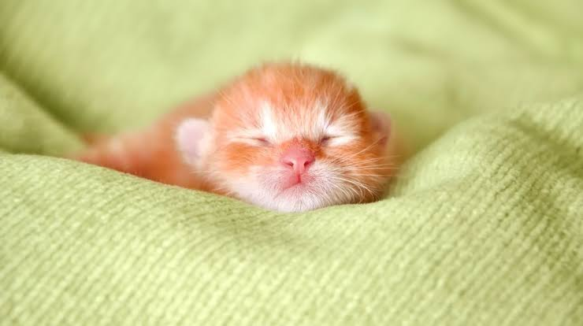

Historia y Comportamiento Felino
Los gatos domésticos (Felis catus) han sido compañeros cercanos de los seres humanos desde hace miles de años, comenzando su domesticación en el Antiguo Egipto, donde eran venerados como símbolos de protección y buena fortuna. A diferencia de los perros, los felinos mantuvieron un alto grado de independencia física y conductual, conservando agudos instintos cazadores y una gran agilidad.
El lenguaje corporal de un gato es sumamente refinado y expresivo. A través del movimiento de sus orejas, el balanceo de su cola y los diferentes tipos de maullidos o ronroneos, estos animales comunican su estado emocional. El ronroneo, por ejemplo, no solo indica relajación o afecto, sino que también estimula la regeneración ósea y muscular a través de frecuencias vibratorias específicas.
Mantener un entorno enriquecido es vital para la salud física y mental de un gato en el hogar. Integrar rascadores verticales, zonas elevadas de descanso y rutinas diarias de juego estimula su mente, reduce el estrés y previene problemas de comportamiento asociados con el sedentarismo en interiores.
Galería de Gatos



Razas Populares
Siamés
Conocidos por su cuerpo esbelto, ojos azules intensos y una personalidad sumamente vocal y sociable.
Maine Coon
Una de las razas de pelo largo más grandes del mundo, famosos por su carácter dócil y pelaje abundante.
Persa
Destacan por su cara ancha y plana junto con un pelaje abundante que requiere cepillado constante.